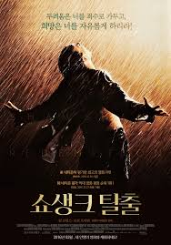

DIV1
DIV2
DIV3
DIV4
DIV5
DIV6
DIV7

쇼생크 탈출은 스티븐 킹의 원고지 700매 분량 중편 소설을 원작으로 한 1994년 미국 영화이다.
대체로 원작 소설의 내용에 충실하게 각색한 작품으로, 쇼생크 감옥에 갇힌 앤디 듀프레인을 중심으로 벌어지는 일을 그렸다.
아카데미 시상식 7개 부문에 후보에 올랐으며, 2015년부터 미국 의회도서관의 National Film Registry가 영구 보존하는 등 높은 평가를 받는다.